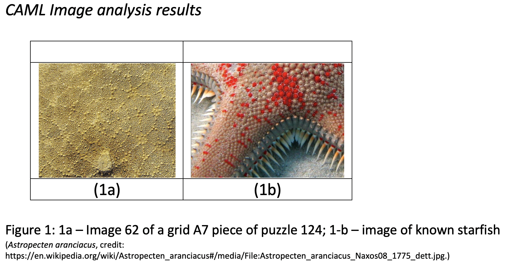
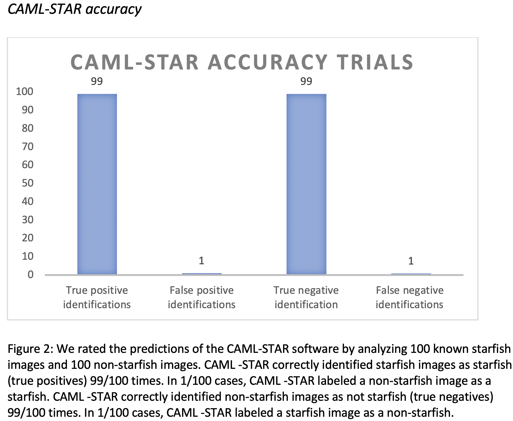
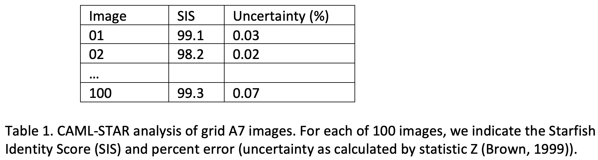

Doing a lab writeup
A scientific paper is the key product of research. After perhaps years of work a scientist (actually almost a group of scientists) will write a paper (often called a manuscript) detailing their work.
Purpose of the paper – adding pieces to the puzzle
The purpose of the paper is to communicate the new contribution the scientists’ work represented. In very rare occasions, that contribution is something new and unexpected (i.e., an entirely new phenomenon). For example, see this article and the original paper on the discovery of that the universe was not static, but expanding.
More often, scientists answer smaller questions or pieces of questions. Think about science more as discovering an image as you slowly add puzzle pieces, rather than discovering an image by turning a corner in a museum “and there it is!”
What this means is that amongst a group of scientists (usually called a field or discipline, for example “cancer biologists”) there are a variety of related questions big and small. For example, if we asked a school to figure out how cars work (no Wikipedia or Google), we might investigate how engines work, how transmissions work, how gasoline works, how wheels work, etc. There is one big question (how cars work) but the way to answer that is usually by figuring out how individual components work and trying to put that knowledge together. This approach is called reductionism (reducing a large problem to the sum of its parts). It is not the only approach, and does not always work, but that is another conversation.
When you write your paper, you are announcing you have found a new and important puzzle piece! But there are problems. Scientific questions usually come from a really big puzzle. Suppose in your section of the puzzle you have found a starfish. Maybe the puzzle is a beach scene? But what if someone else’s puzzle pieces are shaping into a snowy mountain? They might not believe you are interpreting things correctly. You may think the same - maybe their section will turn out to be a cloud? You will not only need to put some context to your work (i.e., we have other pieces that look like sand and water), but you will need to prove you are qualified to tell what starfishes look like (i.e., you have a marine biology degree). You will need to show you are both working on the same puzzle and your pieces belong to the same image. Before we get too lost in analogy, let’s come back to the main sections of a paper and see what they do for us.
Paper Sections – demonstrating your puzzle piece fits and is important
Typically, a paper will present the following sections. Here is what they are and do:
Abstract
This is usually a very short summary of the main findings of your work. We aren’t writing a mystery novel where we want to build up to our new and important findings. Instead, we clearly state the main question we are working on and what we have found. The purpose here is to help the reader decide if the paper will be interesting to them (i.e., that it addresses a question they are working on, or is related to questions they work on).
Example paper: “In this paper we describe the discovery of several puzzle pieces which suggest a starfish is located in grid A7 of puzzle 124.” – A reader also working in or near that grid might want to know if they will find similar images, or if maybe combining their data with yours will make a clearer picture. Other readers working further away might wonder if this means the overall scene might turn out to be a beach. Readers working on puzzle 125 might not decide to read this paper.
Introduction
Usually, three things are accomplished in this section:
-
Statement of importance: You will state something about the general importance of the scientific questions you are working on. For example, “If we could grow more wheat under drought conditions, famers in dry climates could double the world’s food supply.”
-
Statement of what is already known: Here you will try to give some information about what the consensus of facts are on this topic. Usually, you will mention other important papers which people trust as the current most reliable facts on the topic.
-
Your contribution: Here you will try to show how your findings relate to the existing facts. Almost always there will also be current hypotheses, things that scientists believe are true but which we still don’t fully understand or have enough evidence for. Here you tell the reader what your paper adds. Perhaps you have found new evidence to support a hypothesis, or you have evidence that suggests the hypothesis is wrong.
Example paper: “People who like beach scenes are always in search of new photos because they are enjoyable and make great decorations for the living room. It generally accepted that beach photos reduce stress and lead to a happy home environment. Previously, it has been suggested (Smith, 1993) that puzzle 124 (P-124) may ultimately be a beach scene. This hypothesis is also supported by the findings of Nash (1998, 2002) that assembled a beach ball in grid A2 of the puzzle. Lubbock 2017 contested the beach scene hypothesis when they claimed a section of grid A7 suggested a basketball, an item rarely if ever found in beach scenes. We have previously reported several seashell images in grid A6 (Greenwald 2018). Using new method for Computer-Automated-discovery of Marine Life (CAML), a software described in Black 2019 we now report a potential starfish (Asteroidea) in grid A7. The updated version of this software (CAML -STAR) could accelerate the detection of other Starfish and finally confirm the P-124 beach scene hypothesis.
Methods
At some point, the paper will need to describe the work done to generate data. That data is then the basis for conclusions that are described later in the paper. Ideally the methods section will be detailed enough so that someone could replicate the work you have done. In some papers the methods themselves are not new. In that case this section could be as short as referring to another more detailed paper and describing that you followed that previously published method (perhaps you will describe any minor modifications). Other papers may have a longer methods section if they have created a new method.
Example paper: A collection of 100 images which have been identified as coming from grid A7 were loaded into the CAML software (following the instructions detailed in Black 2019). However, we updated the original software to be more sensitive to the colors and textures more closely associated with known starfishes. Next, we used several known images to see if the CAML software could positively identify the known starfishes. After making adjustments to the software code, we developed an analysis of all 100 grid A7 images. For each image the software generated a score (1-100) that estimated the likelihood that the image segment was of starfish origin (with 100 being an almost certain match). A link to the copy of this new software (CAML -STAR) is included in the supplemental materials.
Results
In this section, you will present the data generated by your experiments. Here you will often have graphs and images (collectively known as “figures”). These figures are often what your readers will care most about! This is because for readers that are familiar with your questions and the current research, the data are hopefully convincing enough that all of your other writing is just the “icing on the cake.” Here you will present your data with a minimal amount of interpretation. The figures themselves also need appropriate captions. These captions should explain what the figure shows and should have enough information that they stand on their own. There may also be statistical analyses in these sections. Using the mathematics of statistics there are a number of “statistical tests” that we can run on data to help us determine if a result we obtain is likely to have happened by chance (accident) or if our data is very unlikely to have been observed purely by random chance.
Example paper: In figure 1 we present image 62 of our puzzle piece collection along with an image of a known starfish. We show in figure 2 that CAML -STAR software is reliable because it was able to tell known-starfish images (positive control) from non-starfish images (negative control) with 99% accuracy. Figure 3 shows “starfish” score for each of our 100 images. 98% of our images had a score of 95 or higher. This is a very unlikely result if our images did not come from starfish. The probability of these observations happening by random chance is less than 5% (p <0.05, Chi-Squared statistical test).



Discussion
In this section of the paper, your goal is to draw logical conclusions from the data presented to the questions and hypotheses you identified in the introduction. To do that, you need to think about what a reader who is familiar with the science might ask about the conclusions you pose. For example, if you are using a well-tested and reliable method, readers may not have many questions about the soundness of the method is (assuming you presented it in a detailed enough fashion). If your method is new, then much of your discussion and data need to support the method’s reliability. If your conclusions fit neatly with existing hypotheses, your arguments may not need as much evidence than a case when your conclusions seek to overturn longstanding and accepted conclusions. Here you may also propose a new or modified hypothesis and suggest future work that can explore that new hypothesis. Remember, we don’t irrefutably prove things in science, we present evidence that supports or rejects hypotheses and work to refine our hypotheses so that we can make more accurate predictions about phenomena and how they work.
Example paper: In this study, we presented CAML-STAR a reliable new software that can identify starfishes with a low rate of error. [Many sentences explaining the figures and how the data support this conclusion]. When applied to images from grid A7 puzzle 124 we can conclude with a high degree of confidence that we have identified a starfish image in this grid. This work strongly supports the “beach scene” hypothesis for puzzle 124. We anticipate future work may be able to make a species identification of the identified starfish and be used to identify other starfish in puzzle 124 and perhaps elsewhere.
References
Throughout your paper, much of the knowledge presented will be from the work of previous investigations. It is important that when you present work that has been generated by others that you credit that work. Typically, a paper we will list the name/names of the researchers who published those papers and the year the work was published. You don’t have to provide a reference for every fact (e.g., “water is wet”), but accepted conclusions in the field will be noted. In the references section, you will present the list of authors, the title of the paper, and the journal and journal issue the work appeared in. The order of those items can vary according to where you publish. There is no writing or explanation here just a numbered list. It is also possible that references in the main text are only noted by superscript numbers (e.g., “we know that beach scene have a calming effect on the human mood1.”)
Example paper:
References
1. Smith, A.R., Scharf K. The calming effect of beach scenes on mood. Journal of Human Psychology, Vol 25. No.4, 2009
Supplementary Materials
Some papers will also have a supplemental section. This can contain many things including additional data and tables. In publication you normally have word and space limits and so this section may contain additional information of use to the reader.
Bacterial Transformation Mini Lab Writeup
How a lab writeup is different than a scientific paper
While a lab writeup has a lot in common with a scientific paper, there are many differences. In general, a lab writeup is not presenting new and original research in an area of science. Instead, a lab writeup is a first step toward familiarizing you with the style and flow of scientific writing. A lab writeup helps to demonstrate that you are capturing the essential skills of documenting your work in the lab.
Assignment
For this lab writeup, we will focus on the methods, results, and discussion of the bacterial transformation lab. Here are the instructions.
Team project This writeup will be done as a group project amongst the groups who worked on the lab in class.
Sections and length You will be responsible for only three sections described as follows. The length of the assignment should not be more than three pages. You may as a group decide to split the work so that each person is responsible for one (or a part) of a section. Be sure the completed work meets everyone’s approval.
-
Methods: In this section, you should provide a detailed, step-by-step description of the work done in the laboratory. Since you were presented with a method in class you can use this as a starting point, but for each step you must a) note if you modified a step in any way; 2) provide a simple explanation for the purpose of each step. Say what you did, but do not draw conclusions in this section.
-
Results: In this section, you should present image(s) of the final bacterial plates. You should describe what is seen on each plate (e.g., a lawn of growing bacteria, no bacterial growth, bacteria colonies). You may have photos in white and UV light. Describe each photo and what the person viewing should notice. Make it clear which plates have what antibiotics and which plates had bacteria with or without plasmid. Say what you see, but do not draw conclusions in this section.
-
Discussion: In this section, you should present the purpose of the experiment, describing the intention to transform bacteria with the pGFP plasmid. You should explain what the purpose of each plate (with their combinations of plasmid/antibiotics/LB) was. Indicate if the predictions (hypothesis) matched the results you obtained.